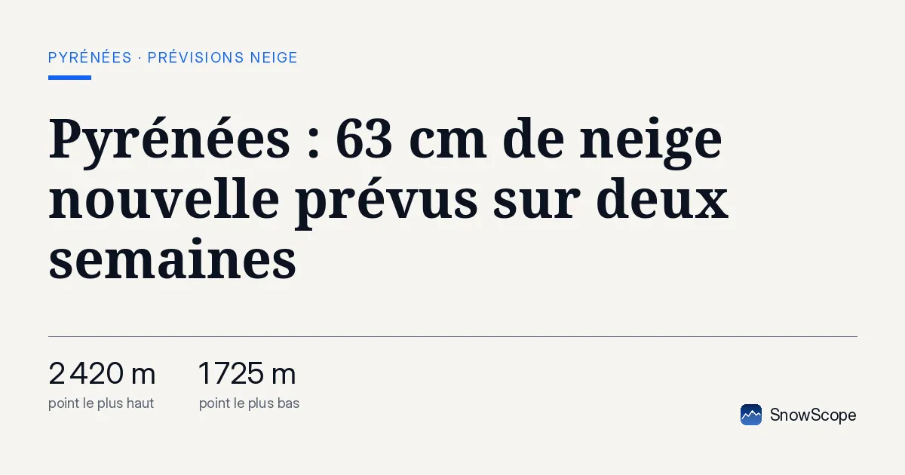
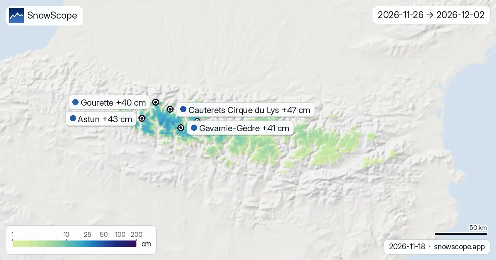

Pyrénées : 63 cm de neige nouvelle prévus sur deux semaines
Notre modèle de neige montre que les Pyrénées recevront jusqu'à 63 cm de neige nouvelle sur les 14 prochains jours, les chutes les plus importantes arrivant la première semaine. L'essentiel de cette neige atteindra les hauteurs au-dessus de 2 000 m, où les montagnes pourront la conserver jusqu'au début décembre.
Consultez les prévisions neige en temps réel pour Cauterets Cirque du Lys sur l'application SnowScopeHauteurs de neige, alertes poudreuse et carte 3D, gratuitement.
Quand et où la neige arrive
La première semaine (19–25 novembre) livrera environ 70 % des chutes totales. Jeudi 21 novembre semble être un tournant : 14 stations sont prévues pour recevoir 5 cm ou plus ce jour-là, avec Gavarnie-Gèdre en tête à 12 cm. L'impulsion plus importante arrive samedi 22 novembre, quand Gourette pourrait voir 17 cm et 20 stations à travers la chaîne recevront de la neige mesurable.
La deuxième semaine (26 novembre au 2 décembre) sera plus calme. Un deuxième événement plus petit autour du 26 novembre apportera 5 à 8 cm aux stations éparses, puis les conditions s'assécheront jusqu'au début décembre.
| Station | Hauteur de neige | Neige fraîche, 72 h | Attendu, jours suivants | Sommet |
|---|---|---|---|---|
| Cauterets Cirque du Lys | 3 cm | 1 cm | 10 cm | 2 420 m |
| Astun | 0 cm | 0 cm | 6 cm | 2 272 m |
| Gavarnie-Gèdre | 1 cm | 0 cm | 6 cm | 2 283 m |
| Gourette | 3 cm | 1 cm | 8 cm | 2 453 m |
| Piau-Engaly | 9 cm | 6 cm | 12 cm | 2 527 m |
| Grand Tourmalet | 1 cm | 1 cm | 7 cm | 2 464 m |

Épaisseur de neige par altitude
L'altitude compte beaucoup dans les Pyrénées en ce moment. Au-dessus de 2 500 m, notre modèle prévoit une médiane de 24 cm de neige nouvelle, certaines zones atteignant 35 cm. Entre 2 000 et 2 500 m, attendez-vous à 19 à 28 cm. Au-dessous de 2 000 m, les chutes diminuent fortement pour atteindre seulement 2 à 6 cm, et les pics les plus bas (1 500–2 000 m) n'en verront presque pas.
Sur l'ensemble du terrain montagneux de la région, environ 2 300 km² devrait voir 20 cm ou plus, et approximativement 275 km² atteindront 50 cm ou plus. C'est de la neige de début de saison sur un terrain abrupt et rocheux, donc consultez le bulletin officiel d'avalanches avant d'aller hors-piste.

Aperçu station par station
Cauterets Cirque du Lys mène cette prévision avec 47 cm sur 14 jours, culminant le 22 novembre avec 14 cm. Gourette suit de près avec 40 cm et un jour encore plus important le 22 novembre (17 cm). Astun et Gavarnie-Gèdre suivent tous deux autour de 41–43 cm au total. Piau-Engaly, la base la plus haute de la région à 1 762 m, retient déjà 9 cm aujourd'hui et en gagnera 37 cm de plus, avec son meilleur jour le 21 novembre (10 cm).
La prévision comporte une réelle incertitude : les deux modèles que nous utilisons (ECMWF IFS et NOAA GFS) diffèrent de 20 à 30 cm sur certains sites. La neige de début de saison est fine, et des rochers peuvent se trouver juste sous la surface. Ce sont des estimations pour les pentes à mi-montagne de chaque station, pas pour les villages.

Ce que cela signifie pour le ski
Les Pyrénées verront des améliorations notables à travers fin novembre. D'ici le 25 novembre, la zone enneigée à travers la chaîne devrait passer de 460 km² aujourd'hui à environ 750 km² le 21 novembre. Seules 16 des 53 stations retiennent de la neige actuellement ; ce nombre devrait grimper à 20 fin novembre à mesure que les hauts sommets se rempliront.
Les conditions de début de saison seront toujours fines au-dessous de 2 000 m et rocheuses sur les terrains exposés. Le meilleur ski sera sur les pentes orientées nord au-dessus de 2 000 m après chaque événement de neige.
Conseils aux skieurs
- Surveillez jeudi 21 novembre et samedi 22 novembre comme les deux jours clés de neige ; la plupart des stations verront 5–17 cm sur ces deux dates.
- Privilégiez les pentes au-dessus de 2 000 m : le modèle montre peu de neige au-dessous de cette altitude, et vous pouvez trouver des rochers ou une base fine.
- Consultez le bulletin officiel d'avalanches si vous prévoyez de skier hors-piste ; la neige de début de saison est instable et repose sur un sol non consolidé.
- Les prévisions peuvent changer ; ces chiffres sont la moyenne de deux modèles. Consultez à nouveau à l'approche des événements.
- La deuxième semaine est beaucoup plus calme. Si vous pouvez skier la première semaine, c'est à ce moment que la chaîne aura les meilleures conditions.
À propos de ces chiffres
Les hauteurs de neige des stations sont la neige la plus épaisse sur le haut du domaine, d'après le modèle de neige SnowScope (environ 1 km, calcul du 18 novembre) ; ce sont des estimations pour une zone, pas une mesure en un point. Les valeurs des stations de mesure sont mesurées à la date indiquée. Les prévisions peuvent changer. Consultez toujours le bulletin d'avalanche officiel avant le hors-piste.
Bulletins d'avalanche officiels: Météo-France / Meteocat / AEMET
Citer ce bulletin
Pour la recherche, l'enseignement ou la presse : chiffres et graphiques réutilisables librement sous CC BY 4.0 avec cette citation.
SnowScope (2026), Pyrénées : 63 cm de neige nouvelle prévus sur deux semaines, https://snowscope.app/blog/fr/2026/11/pyrenees-2-week-snow-forecast-maps-18-november-2026.html, consulté le 2026-11-18
SnowScope (Atlas Labs). (2026, November 18). Pyrénées : 63 cm de neige nouvelle prévus sur deux semaines. SnowScope snow reports. https://snowscope.app/blog/fr/2026/11/pyrenees-2-week-snow-forecast-maps-18-november-2026.html
BibTeX
@misc{snowscope2026pyrenees2weeksnowforecas,
author = {{SnowScope (Atlas Labs)}},
title = {Pyrénées : 63 cm de neige nouvelle prévus sur deux semaines},
year = {2026},
month = nov,
howpublished = {\url{https://snowscope.app/blog/fr/2026/11/pyrenees-2-week-snow-forecast-maps-18-november-2026.html}},
note = {Published 2026-11-18 12:17 UTC; accessed 2026-11-18}
}· CC BY 4.0 · Méthodes, données et outils →
Suivre Cauterets Cirque du Lys
Gratuit : un message quand la neige arrive, et la météo chaque matin.
Autres bulletins neige

Combien de temps les Pyrénées sont restées blanches chaque hiver depuis 2000-01, vu par satellite, et la hauteur de neige à 10 stations aux longues séries. Trois hivers maigres d'affilée ont pris fin en 2025-26 ; cet automne a commencé normalement.

Piau-Engaly domine la prévision avec 37 cm de neige fraîche d'ici le 13 novembre ; 24 cm sont attendus le 12 novembre.

Comparez Grandvalira et les stations espagnoles en décembre 2026 pour les hauteurs de neige, l'altitude des remontées et les prix à partir de 49,00 EUR.